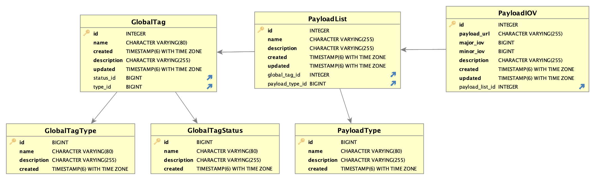

<h1>Goals and Requirements</h1> - **The goal:** - Allow reco jobs to fetch calibrations and other parameters needed to process the data from a database <hr style="width: 50%;"/> - Minimum interval with stable parameters is expected to last for $\sim\\! 1$ minutes - Reconstruction jobs are expected to run for $\sim\\! 10$ hours and process $\sim\\! 1$ seconds worth of data - Therefore, a typical reco job should be able to fetch all the necessary conditions data once - $\sim\\! 10^5$ jobs are expected to run simultaneously
<h1>Solution</h1> - The proposed solution is not to store the actuall values (payload data) in the database (Paul L. and Ruslan M.) - Instead store the payload outside of the database as files - The database contains the info about the location of payload, its validity periods, etc. (metadata) <div class="hcenter">  </div> - **The bottom line:** The data handling complexity is shifted from the server to the client
<h1>Implementation</h1> - A PostgreSQL database is used as a backend containing the metadata - A Django app is being developed to send queries to PostgreSQL via web API requests and return responses with payload names/locations (?) - The source code is available at https://github.com/BNLNPPS/NPDB - The app is containerized (?) and deployed at SDCC <pre><code class="shell" data-trim style="font-size: 0.9em; overflow: auto;"> $ curl 'http://nopayloaddb-nopayloaddb.apps.sdcc.bnl.gov/api/cdb_rest/payloadiovs/?gtName=GT1&majorIOV=1&minorIOV=2' [] </code></pre> <hr style="width: 50%;"/> - The layer transferring requests from reco jobs to NPDB has to be a part of the client - Proposed implementation using `libcurl` - The database is currently empty. Needs to be filled with something to allow for reasonable responses for test purposes
<h1>Usage Scenarios</h1> - **Option 1** - A subsystem submits a request with a timestamp corresponding to the data being processed (naturally the time when the data was recorded) - Receives one or more payload locations - Subsystem experts provide the code to access the payload data, unpack, and use it - The API can be as simple as <pre><code class="lang-cpp" data-trim style="font-size: 0.9em; white-space: pre;"> std::vector< std::string > fetch_paths(SubSystemId, uint64_t timestamp); </code></pre> - **Option 2** - Same as **Option 1** but in addition fills the user data type (assuming a common interface) <pre><code class="lang-cpp" data-trim style="font-size: 0.9em; white-space: pre;"> template< typename SubSystemDataType > void fetch(SubSystemDataType& d, uint64_t timestamp); </code></pre> - May be provided later or in addition to **Option 1**... - Other options?
<h1>Next steps</h1> <div style="font-size: 97%;"> - At this point it is not very clear what the final users expect and how the interface layer needs to function - For testing purposes, it would be good to have: - Instructions how to start up the Django app in a container - Some realistic entries in the database in order to develop a parser for server response - Should we worry about how the metadata is inserted in the database? - Caching - It appears that each job should be able to get all needed data once at the beginning - Not clear if there is any benefit from caching on the client side - $\sim\\! 10^5$ independent processes may need to access the same set of files at the same time - The client is unlikely to be able to control the caching at the file system level... - It seems to be the server's (i.e. the Django app) responsibility to cache results from identical web API requests to avoid opening too many connections to PostgreSQL </div>